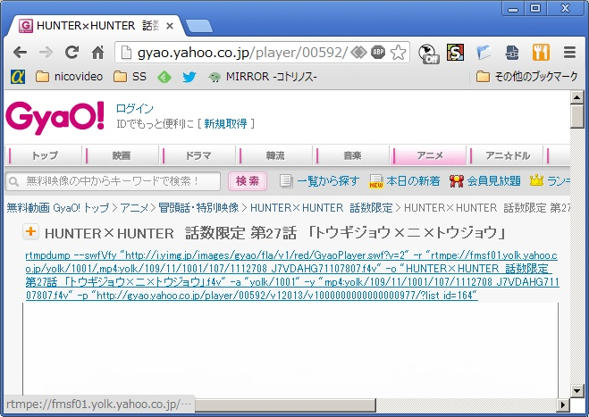

Gyao は人気のある動画配信サイトのひとつです。
しかし、配信期間と自分の予定が合わなかったり、貧弱な回線の場所でカクカクしながら再生されたりといった事情で動画を手元に置いておきたいといったこともあるでしょう。
この拡張はそうした場合に Gyao の動画を保存することを支援するものです。
実際の画面で説明します。
まず個別の動画ページのタイトルの上に、動画を rtmpdump でダウンロードするコマンドが表示されるようになります。
表示されたコマンドをコンソールに入力すればそのままダウンロードすることが出来ます。
もちろん、 rtmpdump のインストールは事前に行っておいて下さい。
Copyright (c) 2013 SAITO Atsushi
Redistribution and use in source and binary forms, with or without modification, are permitted provided that the following conditions are met:
THIS SOFTWARE IS PROVIDED BY THE COPYRIGHT HOLDERS AND CONTRIBUTORS "AS IS" AND ANY EXPRESS OR IMPLIED WARRANTIES, INCLUDING, BUT NOT LIMITED TO, THE IMPLIED WARRANTIES OF MERCHANTABILITY AND FITNESS FOR A PARTICULAR PURPOSE ARE DISCLAIMED. IN NO EVENT SHALL THE COPYRIGHT OWNER OR CONTRIBUTORS BE LIABLE FOR ANY DIRECT, INDIRECT, INCIDENTAL, SPECIAL, EXEMPLARY, OR CONSEQUENTIAL DAMAGES (INCLUDING, BUT NOT LIMITED TO, PROCUREMENT OF SUBSTITUTE GOODS OR SERVICES; LOSS OF USE, DATA, OR PROFITS; OR BUSINESS INTERRUPTION) HOWEVER CAUSED AND ON ANY THEORY OF LIABILITY, WHETHER IN CONTRACT, STRICT LIABILITY, OR TORT (INCLUDING NEGLIGENCE OR OTHERWISE) ARISING IN ANY WAY OUT OF THE USE OF THIS SOFTWARE, EVEN IF ADVISED OF THE POSSIBILITY OF SUCH DAMAGE.